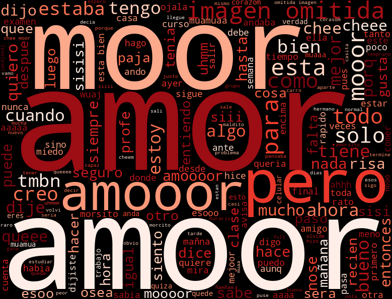

Una mirada a todos nuestros mensajes...
mensajes en total.
¡Eso es mucho chisme y amor!
0
0
Siempre hablando hasta la madrugada...
Todo lo que nos dijimos, resumido en un corazón:

(Ejecuta el script de Python para generar tu wordcloud.png aquí)
Te amo ❤️